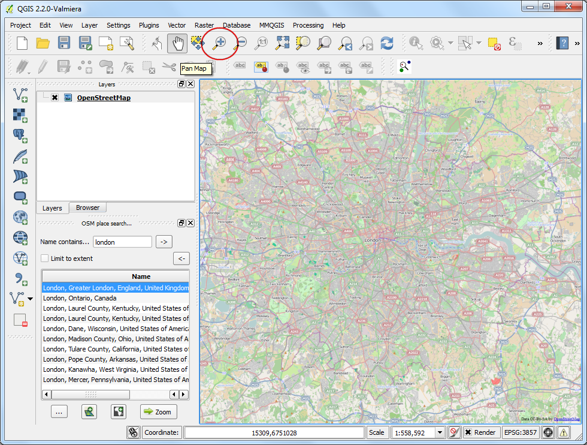

Utilizarea Funcțiilor pentru Expresiile Python Personalizate
[ Download PDF A4 Letter ]
Expresiile din QGIS au o mare putere, fiind utilizate în mai multe funcțiuni de bază - selectare, calculul valorilor unui câmp, stilizare, etichetare etc. QGIS are, de asemenea suport pentru expresii definite de către utilizator. Cu un pic de programare python puteți defini propriile funcții, care pot fi utilizate în cadrul motorului de expresii.
Privire de ansamblu asupra activității
Vom defini o funcție personalizată care găsește Zona UTM a unei entități din hartă, apoi vom folosi această funcție pentru a scrie o expresie care afișează zona UTM sub formă de sfat, la trecerea pe deasupra punctului.
Alte competențe pe care le veți dobândi
Procedura
Lansați QGIS și mergeți la .

Navigați la fișierul descărcat, ne_10m_populated_places_simple.zip, apoi faceți clic pe Open.

Mergeți la .

Comutați pe fila Editorul de Funcții. Aici puteți scrie orice cod PyQGIS, care va fi executat de către motorul de expresii.

Vom defini o funcție particularizată, denumită GetUtmZone, care va calcula numărul zonei UTM pentru fiecare entitate. Deoarece funcțiile personalizate din QGIS lucrează la nivel de entitate. Vom folosi centrul de greutate al geometriei entității și vom calcula Zona UTM din latitudinea și longitudinea geometriei centroidului. Vom adăuga, de asemenea, denumirea ‘N’ sau ‘S’, pentru a indica dacă zona este în emisfera nordică sau sudică. Introduceți codul de mai jos în editor, denumiți fișierul ca utm_zones.py, apoi faceți clic pe Salvare fișier.
Note
Zonele UTM sunt zone de proiecție longitudinale, numerotate de la 1 la 60. Fiecare zonă UTM are o dimensiune de 6 grade. Aici vom folosi o formulă matematică simplă, pentru a găsi zona adecvată pentru o valoare longitudinală dată. Rețineți că această formulă nu acoperă unele zone UTM speciale.
import math
from qgis.core import *
from qgis.gui import *
@qgsfunction(args=0, group='Custom')
def GetUtmZone(value1, feature, parent):
centroid = feature.geometry()
longitude = centroid.asPoint().x()
latitude = centroid.asPoint().y()
zone_number = math.floor(((longitude + 180) / 6) % 60) + 1
if latitude >= 0:
zone_letter = 'N'
else:
zone_letter = 'S'
return '%d%s' % (int(zone_number), zone_letter)

Faceți clic pe Rulare Script. Aceasta va executa codul python și va înregistra funcția GetUtmZone în motorul de expresii. Rețineți că acest lucru este necesar să aibă loc o singură dată. O dată ce funcția este înregistrată, ea va fi întotdeauna la dispoziția motorului de expresii.

Comutați în fila Expresiilor a dialogului Selectare după expresie. Găsiți și extindeți grupul Personalizate din secțiunea Funcțiilor. Veți observa o nouă funcție personalizată, $GetUtmZone, în listă. Putem folosi de acum această funcție în cadrul expresiilor, la fel ca oricare altă funcție. Tastați următoarea expresie în editor. Această expresie va selecta toate punctele care se încadrează în Zona UTM 40N. Faceți clic pe Selectare.

În fereastra principală a QGIS, veți observa unele entități evidențiate în galben. Acestea sunt punctele care se încadrează în zona UTM specificată în expresie.

Ați văzut cum am definit și folosit o funcție personalizată, pentru a selecta entitățile duiupă o expresie. Vom folosi acum aceeași funcție într-un alt context. Una dintre bijuteriile ascunse în QGIS este instrumentul Indiciile Hărții. Acest instrument arată textul definit de utilizator atunci când treceți peste un element. Faceți clic dreapta pe stratul ne_10m_populated_places_simple`, apoi selectați Proprietăți.

Comutați la fila Afișare, apoi selectați HTML. Aici puteți introduce un text oarecare, care va fi afișat atunci când treceți peste entitățile stratului. Mai mult, puteți folosi valori și expresii din câmpurile stratului pentru a defini un mesaj mult mai util. Faceți clic pe butonul Introduceți expresie....

Veți vedea din nou editorul de expresii familiar. Vom folosi funcția concat pentru a alătura valoarea câmpului name rezultatului funcției noastre personalizate, $GetUtmZone. Introduceți următoarea expresie, apoi faceți clic pe OK.
concat("name", ' | UTM Zone: ', $GetUtmZone)

Veți vedea expresia introdusă ca valoare a textului Display. Faceți clic pe OK.

Înainte de a continua, haideți să de-selectăm funcțiile alese în pasul anterior. Mergeți la .

Activați instrumentul Indiciile Hărții mergând la .

Măriți oricare zonă a hărții și deplasați cursorul mouse-ului peste o entitate oarecare. Veți vedea numele orașului și zona UTM corespunzătoare, afișate ca indiciu în hartă.